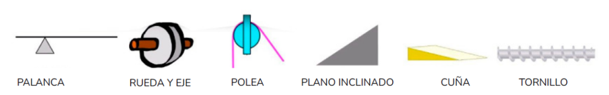
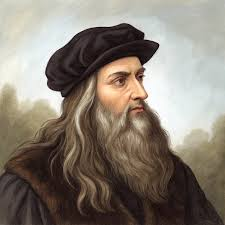
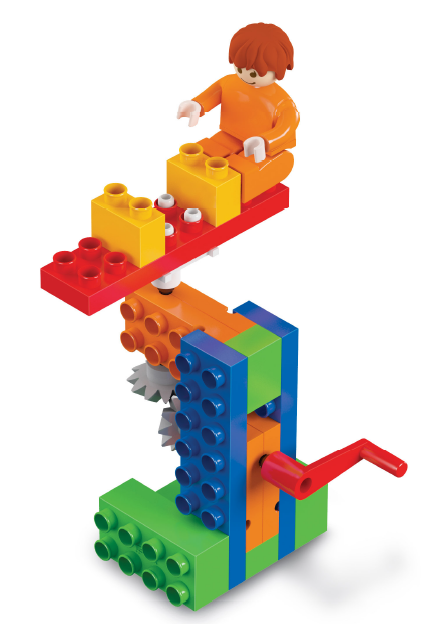
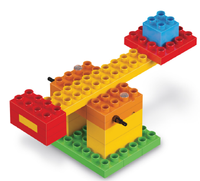
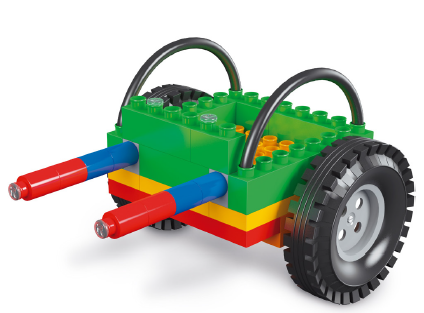
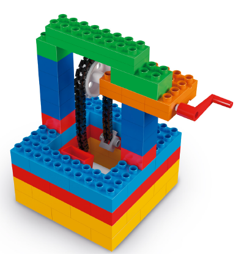
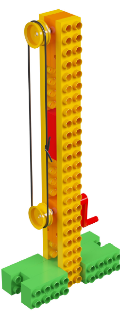

Máquinas y mecanismos
En este tema aprenderemos qué son las máquinas, cómo facilitan nuestro trabajo y qué tipos de energía necesitan para funcionar.
También descubriremos cómo los mecanismos transmiten o transforman el movimiento mediante engranajes, cadenas, poleas y manivelas.

Leonardo da Vinci fue un inventor, artista y científico italiano. Se destacó por diseñar máquinas muy avanzadas para su época y por inspirarse en la naturaleza para crear nuevos inventos.

Después de observar el video, responde en tu carpeta:
Utilizando el kit Rasti, construirás junto a tu equipo dos de los siguientes modelos:

Calesita

Catapulta

Carretilla

Pozo o aljibe
Vamos a construir un mástil para izar la bandera nacional. Para ello debes construir tu propia banderita en una cartulina de 10 centímetros de ancho por 6 centímetros de largo. Puedes pintarla o pegarle trocitos de papel y pegarle un trozo de hilo de aproximadamente 40 centímetros. Luego, se organizan en roles: comunicador, organizador y constructor (Pueden construir 2 mástiles por equipo). Abrir la guía de armado disponible en la Tablet “Mástil”. Cada miembro del equipo debe izar su banderita, por lo que deben turnarse para hacerlo.
